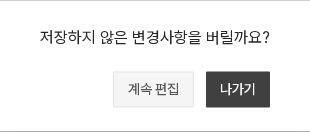
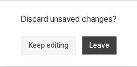
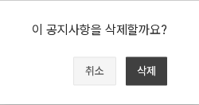
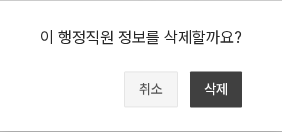
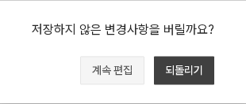
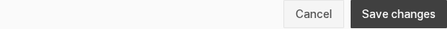

확인 대신 실제 행동을 표시
DS-005 후속 적용 · 기존 동작 유지기존의 ‘취소 / 확인’만으로 결과가 불명확했던 확인창에 계속 편집 / 나가기를 연결했다. 같은 화면에서 초기화하는 이미지 관리는 되돌리기로 구분한다. 삭제 문장은 게시물이라고 일괄 부르지 않고 실제 대상을 표시한다.
변경사항이 있는 편집에서 나가기

영어 · 편집 계속/이탈

공지사항 삭제 대상

행정직원 삭제 대상

이미지 관리 · 같은 화면에서 되돌리기

교과목 · 실제 행동은 저장

위 이미지는 실제 적용 후1200px 화면의 해당 영역을 잘라낸 것이다. 원본보다 확대하지 않는다. 한영 공지의 입력 유지·삭제 취소·이탈, 한국어 직원 삭제 문구와 관리자 초기화를 확인했다. 교과목의 저장 동작은 기존 콜백을 유지한다.
예약 용어는 아직 미확정이다. ‘삭제’를 ‘취소’로 표현하는 안을 별도로 검토한다. 접근성 후속은 마지막 단계에 남겨둔다.